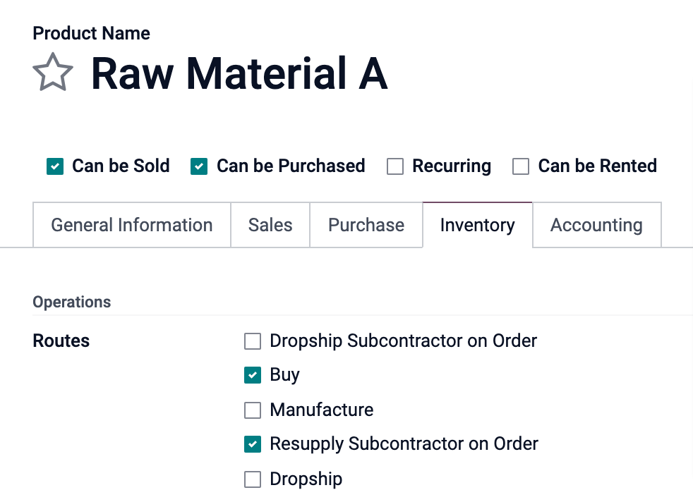

Subcontract your Manufacturing¶
Outsourcing a portion or all of your company’s manufacturing needs is not easy. To make it work correctly, you have to:
Manage the inventory of raw materials at your subcontractor
Ship raw material to your subcontractors, at the right time
Control incoming goods quality
Control subcontractors bills
Here is an example of subcontracting the manufacturing of “C”, which is produced out of raw materials “A” and “B”.

With its MRP subcontracting feature, Odoo helps you handle this flow easily.
Configuration¶
To use the subcontracting feature, go to and tick the box Subcontracting.
To define if a product must be subcontracted, use a Bill of Materials (BoM) of type Subcontracting.
To create a new BoM, go to and hit create. Then, list the components your subcontractor needs to manufacture the product. For costing purposes, you might want to register all the components, even the ones that are sourced directly from the subcontractor.
Once you have set the BoM Type to Subcontracting, specify one or several subcontractors.

Basic Subcontracting Flow¶
To let your subcontractor know how many products you need, create and send them purchase orders (PO). To do so, go to the Purchase app and create a new purchase order. Be sure to send the PO to a vendor that is defined as a subcontractor on the BoM of these products.

Once the PO is validated (1), a pending receipt is created. When the products are received, validate the receipt (2), with the actual quantity received. As a result, Odoo does the following things for you:
Consumes the respective components at the subcontractor’s location, based on the BoM and your input (3);
Produces the finished goods at the subcontractor’s location (4);
Moves products from that subcontractor’s location to YourCompany via the validated receipt (5).
Note
The PO is optional. If you create a receipt manually, with the right subcontractor, Odoo still performs all the moves. This can be useful if the subcontractor does not bill a fixed price per item, but rather the time and materials used.
Inventory Valuation¶
The cost of the manufactured product “C” is defined as:
C = A + B + s
With:
A: Cost of raw materials coming from YourCompany;
- B: Cost of raw materials sourced directly from the
subcontractor;
s: Cost of the subcontracted service.
Sending raw materials to your subcontractors (A) does not impact the inventory valuation, as the components are still valued as part of your stock. This is managed by making the Subcontracting Location an Internal Location.
Then, the vendor price set on the product C form has to be what has to be paid to the subcontractor for his parts and service time: B + s. The product cost has to be: A + B + s, how much the product is valued in the accounting.
Finally, the subcontractor bill then matches the purchase order, with the proposed price coming from the finished products C.
Note
If managing the replenishment of raw materials B at your subcontractor’s location is not needed, simply include the cost of B in the subcontractor’s price s and remove the products B from the BoM.
Traceability¶
In case the received products from the subcontractor contain tracked components, their serial or lot numbers need to be specified during the receipt.
In that case, on the receipt of the subcontracted product, a Record Components button appears. Click on it to open a dialog box and record the serial/lot numbers of the components. If the finished product is also tracked, its serial/lot number can be registered here too.

For audit purposes, it is possible to check the lot numbers recorded on a receipt by using the icon on the right of the finished products:

Also note that in case flexible consumption has been selected on the subcontracted BOM for a non-tracked product, the record components option will also appear optionally on each move line, if you want to register more or less component consumption at your subcontracting location, when receiving your final product.

As you can see, the reception of both of these non-tracked products can either be executed by selecting the ‘Set Quantities’ Option or via the move line hamburger menus.
Automate Replenishment of Subcontractors¶
There are two ways to automate the supply of raw materials to your subcontractors when purchasing the final product. The chosen method depends on whether or not you want the materials to transit through your warehouse. Both of these methods are described as pull style mechanisms as their trigger is the inital PO to the subcontractor, which creates a need at the subcontracting location, for raw material.
If you are supplying your subcontractor with raw material from your own warehouse, you must activate the ‘Resupply Subcontractor on Order’ route as shown below. If this is a component that you buy from a vendor, the buy route should also be activated.
Now, if you want your vendor to resupply your subcontractor directly, you must choose the ‘Dropship Subcontractor on Order’ option instead. In order for this option to be active on the product form, you must first activate the dropship option from . Once the PO to the subcontractor is validated, this route will create a dropship RFQ from your vendor to that subcontractor. You then just need to review and validate it.

Note that the buy route is not selected in this case, as the dropship route is a buy route already.
Finally, if you want to track the stock of these raw materials at your subcontracting location(s), then you must activate Multi-locations in .
From the location form, you are then able to access the Current Stock.

Manual Replenishment¶
You can also choose to replenish your subcontractors manually.
If you want to send components to your subcontractor at your own convenience, select the ‘Resupply Subcontractor’ Operation Type from the Inventory Module, and create a picking, specifying to which subcontractor you are delivering to.

Alternatively, you can also manually ask your vendor to resupply your subcontractor by creating a dropship type PO, with your subcontractor set as the delivery address.